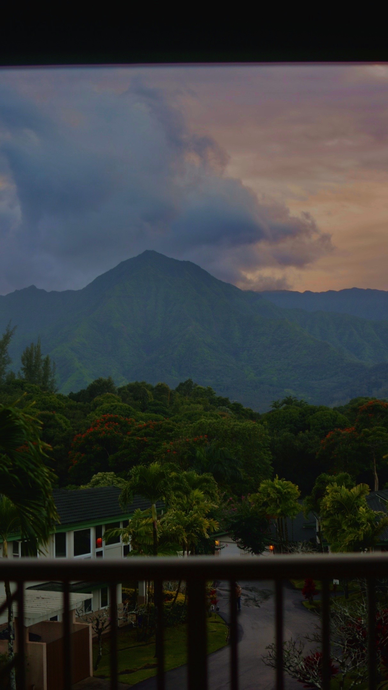

Hello!
This website shares a few places I’ve traveled and what I learned from them. I kept it simple and focused on clear structure and clean styling.

Traveling helps me reset and notice that life is so much more than what we expierence.
Link: Learn about Kauai